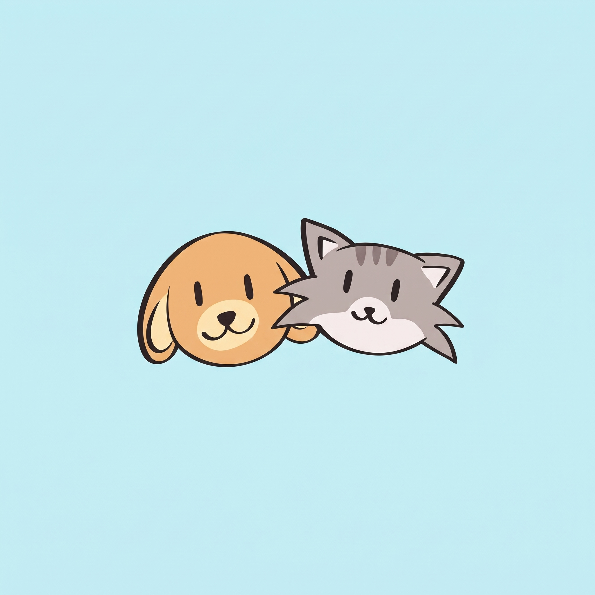

Cada patita merece un hogar que la espere
Somos un grupo independiente de 3 chicas que rescatan, cuidan y buscan familia para perros y gatos de San Miguel de Tucumán. Trabajamos con mucho amor y responsabilidad. Creemos en la adopción responsable como un compromiso para toda la vida.

Conocé a los rescataditos
Cada uno tiene su historia y está esperando a su familia. Si te enamoraste de alguno, escribinos.
Cómo ayudar
No hace falta mucho: un granito de cada uno cambia vidas.
Donaciones económicas
Cada aporte nos ayuda con la veterinaria, el alimento y los cuidados de los rescatados.
Alias de Mercado Pago
Hogar de tránsito
Transitar es abrirle tu casa a un animal por un tiempo, hasta que encuentre su familia definitiva. Le das cariño, rutina y seguridad. No hace falta ser experto: alcanza con ganas y un poco de espacio. Los detalles los charlamos con vos.
Quiero ser tránsitoInsumos y alimento
Lo que más necesitamos:
- Alimento balanceado
- Pipetas
- Gasas
- Mantas